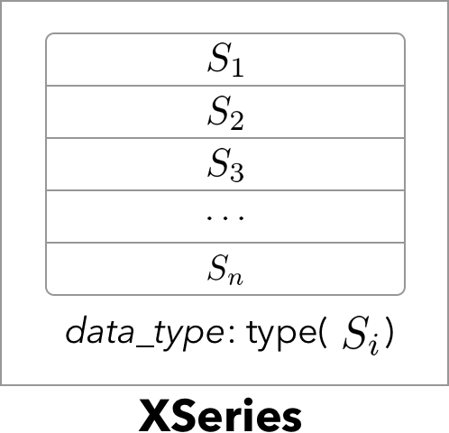
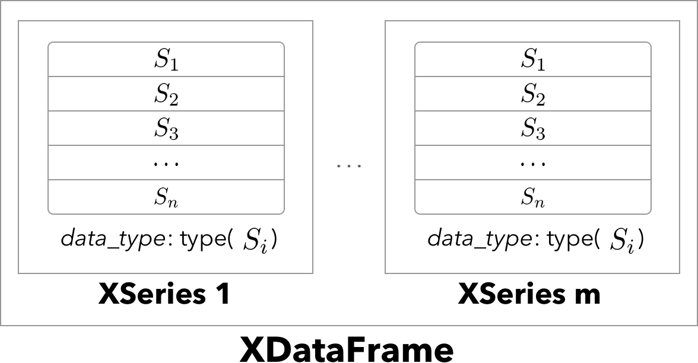
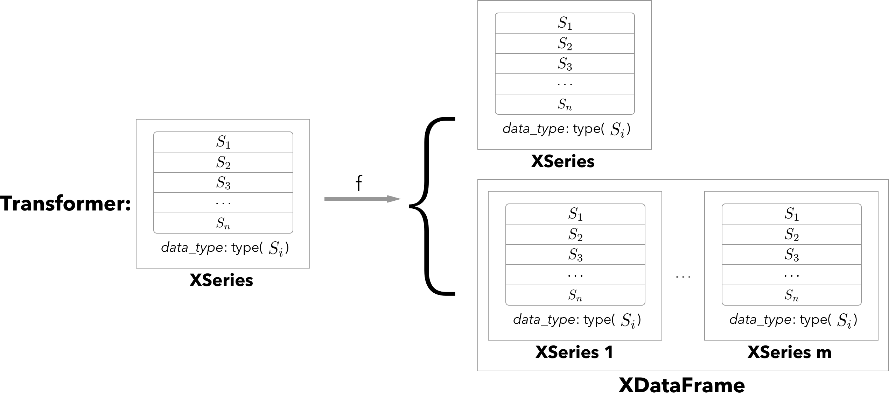

This is a copy-paste from projects Github.
Introduction¶
XPandas (extended Pandas.) implements 1D and 2D data containers for storing type-heterogeneous tabular data of any type, and encapsulates feature extraction and transformation modelling in an sklearn-compatible transformer interface.
Description¶
XPandas provides universal 1D typed list (XSeries) and 2D type-heterogeneous data-frame (XDataFrame) containers and provides an extended sklearn-like transformer classes interfacing said containers. Transformers can be used for automated feature extraction and map-reduce style transformations but are not limited to it.
XSeries is based on pandas.Series that can store objects of any type. Example would be a series of image containers, or a series of pandas.Series objects stored as XSeries. XSeries can be visualised according to a schema.
XDataFrame extends pandas.DataFrame by allowing arbitrary object types per column. It provides the same convenient sub-setting interface and extended abstract access methods. Each column is internally stored as an XSeries container, all of same length. One example could be a medical data set where each row is a different patient, say, in a hospital. The columns would correspond to a type-heterogeneous set of features like numbers (age, height, weight, etc.), categorical (gender, hair color, etc.), images (x-ray pictures), time series (heat beat, lab history), and other parts of a medical record. With XDataFrame one can store all this information in a single 2D data container instead of a tedious collection of custom nested lists or arrays.
Another advantage of XPandas is the clean interface it provides to ready-to-go machine learning algorithms in [scikit-learn](scikit-learn.org). The transformers interface can be used to easily convert the types in a XDataFrame to the primitive types with which sklearn can interface, as part of a modelling pipeline. In the example with patients data, one may want to extract summary features from each pandas.Series, or extract features from each image, say via a fancy deep learning model.
More technically, the implemented XSeriesTransformer class allows implementation of transformation defaults for XSeries, similarly XDataFrameTransformer implements transforation for XDataFrame type objects. More mathematically XSeriesTransformer encapsulates abstract functions of type XSeries -> XSeries or XDataFrame, XDataFrameTransformer encaplsulates functions XDataFrame -> XDataFrame, both following the familiar fit/transform/parameters API from sklearn.
XPandas comes with several pre-implemented transformers for the most common non-primitive data types: